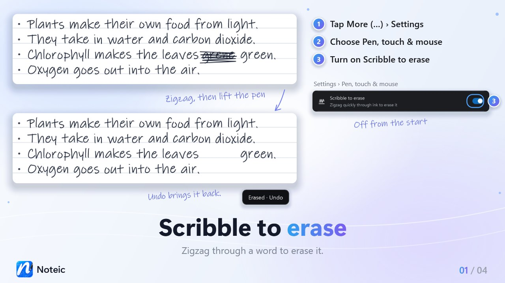

Scribble to erase New in 1.8
Zigzag quickly through a word with your pen, lift the pen, and the word is gone. No need to switch to the eraser.

Turn it on#
Scribble to erase is off from the start.
- Tap … (More) at the end of the toolbar and choose Settings.
- Choose Pen, touch & mouse.
- Turn on Scribble to erase.
Erase with a zigzag#
- With the ballpoint, the fountain pen or the calligraphy pen, zigzag quickly back and forth through the handwriting or shape you want to erase. Three turns are enough.
- Lift the pen. What the zigzag crossed is erased, and the zigzag itself is not kept. Noteic shows Erased · Undo.
- Undo brings it back: Ctrl+Z, the undo button or a tap with two fingers.
- Only what the zigzag crosses goes. Words next to it normally stay, and if one goes by mistake, Undo brings it back.
- Images, PDF text and text boxes always stay.
- It works with the pen and with the mouse, on pages, on a whiteboard and in the zoom window.
- It does not work with the highlighter or the Shapes tool.
Keep a zigzag#
A slow zigzag stays ink. To keep a quick one, hold the pen still at the end before you lift it: it stays as ink, or becomes a shape if Hold for shape is on for that pen.
For erasing larger areas, use the eraser.